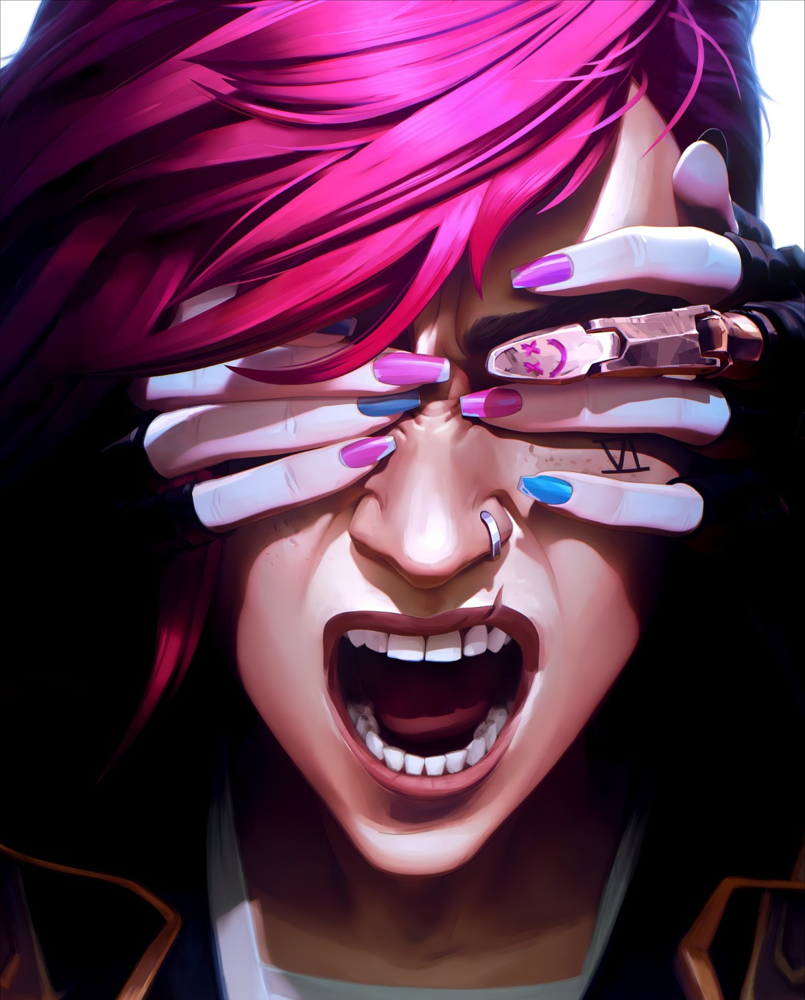
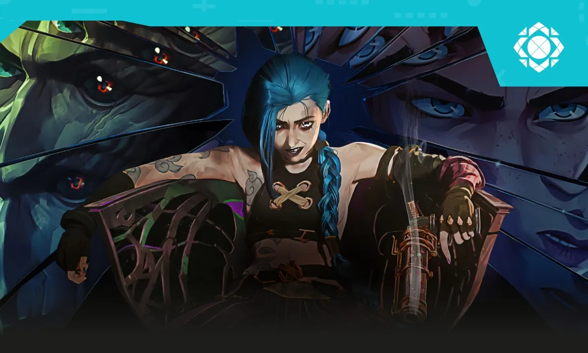

¿Cual es el nombre de la ciudad donde se desarrolla la mayoría de los eventos de Arcane?
- a: Zaun
- b: Piltover
- c: Noxus
- d: Ionia
1-Inspiración en el arte y el cine
Los creadores de Arcane mencionaron que se inspiraron en varias obras de cine y arte para crear el estilo visual y narrativo de la serie. En particular, la influencia del cine de animación como Spider-Man: Into the Spider-Verse y las películas de Studio Ghibli se puede ver en el uso del color y el detalle de la animación. Esto contribuyó a darle a Arcane una atmósfera única que se distingue de otros programas de animación.
2-Éxito crítico y popularidad
Arcane fue muy bien recibida tanto por la crítica como por los fanáticos. Fue aclamada por su animación, narrativa, desarrollo de personajes y música. La serie no solo atrajo a jugadores de League of Legends, sino que también consiguió un público más amplio que no estaba familiarizado con el juego. Esto llevó a que Arcane fuera nominada y ganara premios, incluidos premios en los Annie Awards y reconocimiento en varias plataformas de streaming y siendo recordada por el iconico personaje powder más conocida como jinx.